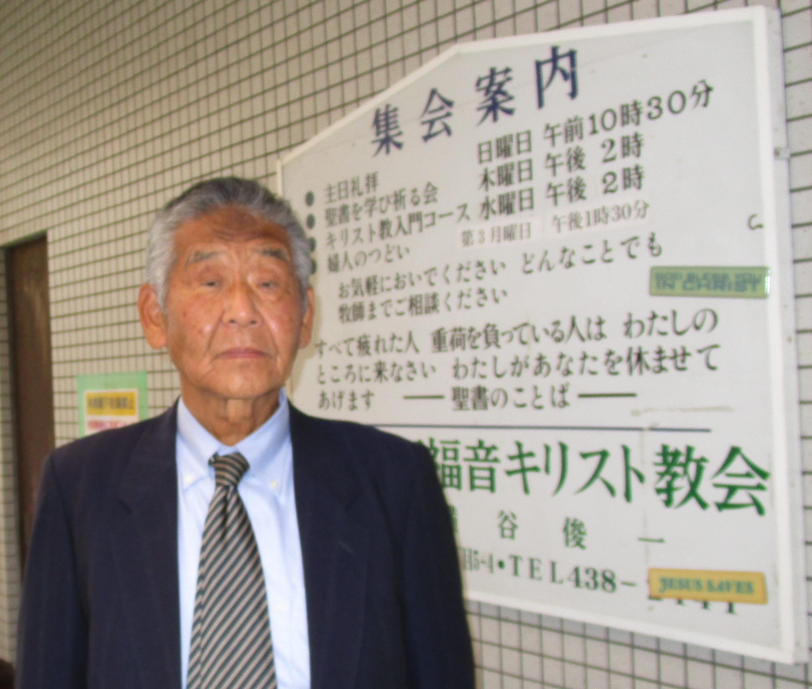

プロフィール

牧師 横谷俊一
１９４１年 京都市生まれ 小学校６年から岸和田市で生活。
１９６０年 高校卒業の時にイエス・キリストを信じて生きる決意。 岸和田聖書教会でキリスト教の洗礼を受ける。 （株）イトーキに３２年間勤務。 大阪、仙台、札幌、沖縄と転勤。 １９９６年 牧師になることを決意 神学校で学ぶ １９９９年 岸和田福音キリスト教会の牧師となり、イエス・キリストが救い主であることを人々に伝え、証ししている。 家族 妻 悦子 子ども３人 それぞれ結婚、独立。一人は牧師(北海道)。